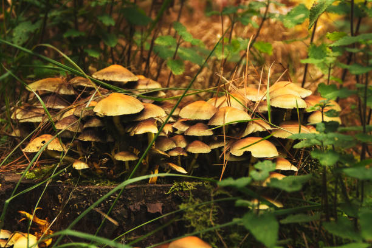

Tortilla de Patatas
Ingredientes
- 6 huevos
- 4 patatas medianas
- 1 cebolla
- Aceite de oliva
- Sal
Instrucciones
- Pela y corta las patatas en rodajas finas.
- Pela y corta la cebolla en juliana.
- Fríe las patatas y la cebolla en abundante aceite a fuego medio-bajo.
- Escurre las patatas y la cebolla.
- Bate los huevos con sal y mezcla con las patatas y cebolla.
- Cuaja la tortilla por ambos lados en una sartén.

Revuelto de Setas
Ingredientes
- 300g setas variadas
- 4 huevos
- 2 dientes de ajo
- Aceite de oliva
- Sal y pimienta
- Perejil fresco (opcional)
Instrucciones
- Lava y corta las setas en trozos pequeños.
- Pica los ajos finamente.
- Sofríe los ajos hasta dorar.
- Añade y cocina las setas.
- Bate los huevos con sal y pimienta.
- Mezcla y cuaja los huevos con las setas.